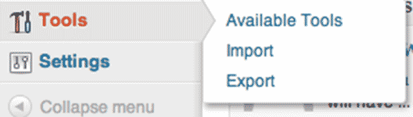

Migrating WordPress
presented at
March 12, 2013
Hi, I'm Russell Heimlich
- Lead technical figure-outer at
Pew Research Center
- Creator of http://dummyimage.com
- Left handed
WordPress sure is great…
- Plugins
- Themes
- WYSIWYG Editing
The Rockstars of WordPress

So Import/Export is…
The Roadies of WordPress
What is a Roadie?
An individual who is responsible for setting up, tearing down, and generally maintaining the equipment for a band.
Without roadies, the rockstars can't perform at different venues.
Without an export you're content is stuck!
How Content is Stored within WordPress
The Database
- Content (Post/Page Stuff, custom fields)
- Comments
- Terms and Relationships
- Options/Widgets/Settings
The Main Folders

wp-content Holds Your Stuff!
Inside of wp-content
- Uploads holds all of your uploaded files
Media are stored in the Uploads folder
But they are referenced by Posts stored in the database.
Any questions so far?
Why might I need Export/Import?
- Changing Web Hosts
- Moving from WordPress.com to your own WordPress site
- Set-up a staging or development version of your site
- Moving from some other CMS to WordPress
Where are the Export/Import features?
Under the Tools menu.
Exporting
Getting stuff out of WordPress
The Export Screen

WordPress eXtended RSS (WXR) File
An XML file that WordPress uses to import or export content.
A WXR File Includes
- Posts, Pages, and Custom Post Types
- Comments
- Custom Fields
- Categories, Tags, and Custom Taxonomies
- Users
A WXR File Doesn't Include
- Your Uploaded Media Files
- Most Options/Settings
- Widgets
How can we migrate those things not included in the WXR file?
Uploaded Media Files
- Download them on import
- Copy your wp-content/uploads folder
Downloading Media Files on Import
Handy when it works but unreliable.
Copying the Uploads Folder
- FTP into your server
- Navigate to /wp-content
- Download the Uploads folder to your computer
- Might as well download the entire wp-content folder
Exporting Options/Settings
- Lots of settings aren't exported
- Some plugins offer setting import/export functionality
- Document the settings and recreate them by hand
Exporting Widgets
There's a plugin for that!
via http://wordpress.org/extend/plugins/widget-settings-importexport/
WXR Export Can Fail
- Too much stuff!
- Export script can timeout
- Server can run out of memory
Consider Exporting in Chunks
via http://wordpress.org/extend/plugins/advanced-export-for-wp-wpmu/
Straight Database Backup
If the WXR Export File doesn't work, you'll have to backup the database.
WP-DBManager
Plugin to export your database from within the WordPress admin.
Sequel Pro (Mac only)
via sequelpro.com
phpMyAdmin
via phpmyadmin.net
Importing
Getting stuff into WordPress
“Built-in” Import Plugins

Variety of Other Import Plugins
Importing Your WXR File
- Upload the file
- Map users from the WXR file to users in your new site
- Import attachments?
- View your imported items
If you downloaded your Uploads folder…
Upload it to your new site so the media files are in place.
Migrating
From another CMS to WordPress.
Helpful Tools
Plugins and resources that come in handy after a migration.
Cleaning Up with Search Regex
Replace references to your old domain to your new domain.
Preview Your Search & Replaces
But be careful, there is no undo!
Pattern Match with Regular Expressions
Handle Redirects with Redirection
Link Monitoring Tools
To see what broke after a migration.
Broken Link Checker
via http://wordpress.org/extend/plugins/broken-link-checker/
Google Webmasters
Questions?
Tweet me, @kingkool68, or contact me.